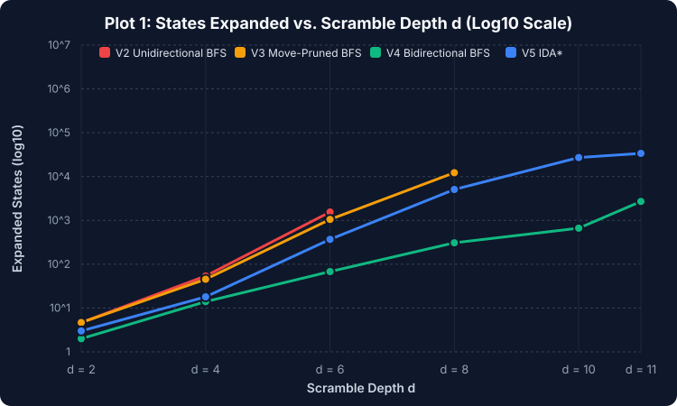
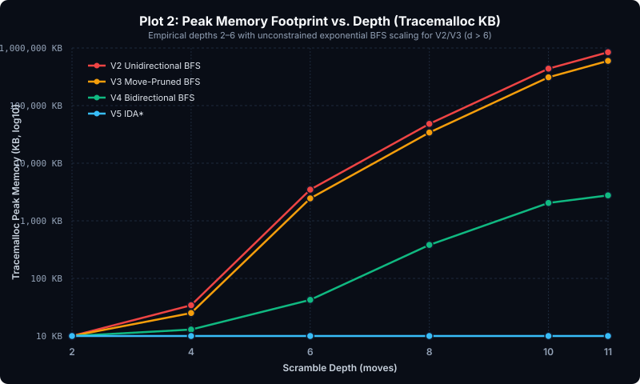

Starting from solved state s0 = (perm=(0,1,2,3,4,5,6), orient=(0,0,0,0,0,0,0)):
Proof:
s0, all orientations are 0, so ∑ oi = 0 ≡ 0 (mod 3).Single Corner Twist Impossibility: If a corner is physically popped and twisted by +1 (orient sum = 1 ≡ 1 mod 3), no sequence of legal moves can ever change the orientation sum modulo 3. Because the solved state has sum 0 ≡ 0 mod 3, it lives in a completely disjoint connected component of the state space. Therefore, BFS will search the entire component of 3.67M states without ever finding a path to solved.
| Search Stage | Frontier Formula | Numerical Paths at d=12 | Speedup vs Stage 2 |
|---|---|---|---|
| Stage 2 (Unpruned BFS, b=6) | N2 = 612 | 2,176,782,336 | 1.0× (baseline) |
| Stage 3 (Face-Pruned BFS, beff=4) | N3 = 6 × 411 | 25,165,824 | 86.5× faster |
| Stage 4 (Bidirectional BFS, d/2=6) | N4 = 2 × (6 × 45) | 12,288 | 177,147× faster! |
When the forward search from s_start meets the backward search from s_goal at meeting state s*:
s_start → s* follows move sequence P_fwd.s_goal → s* applying moves (m_1, m_2, ..., m_k).s* back to s_goal, one must retrace the steps in reverse chronological order and undo each operation: (m_k-1, ..., m_1-1).| Algorithm Stage | Primary Data Structure in RAM | Time Complexity | Peak Memory Complexity | Optimal Shortest Path? |
|---|---|---|---|---|
| V1: Naive 24-Sticker DFS | 24-Sticker Array + Recursion Stack (No visited set, no depth cap) | O(bD) (Infinite / Cyclic) | O(D) Stack Depth | No (gets trapped in cycles, times out without visited set) |
| V2: Unidirectional BFS | FIFO Queue + Visited Hash Map | O(bd) | O(bd) | Yes (guaranteed shortest path) |
| V3: Move-Pruned BFS | FIFO Queue + Same-Face History | O(b × beffd-1) | O(b × beffd-1) | Yes (preserves all optimal paths) |
| V4: Bidirectional BFS | 2× FIFO Queues + 2× Hash Maps | O(2 × beffd/2) | O(2 × beffd/2) | Yes (with full-level synchronization) |
| V5: IDA* | Recursion Stack + Heuristic h(s) | O(bd) | O(d) | Yes (admissible heuristic h(s) ≤ h*(s)) |

Notice how V4 (Bidirectional BFS) collapses expanded states from millions down to hundreds at depth 6-10.

V5 (IDA*) maintains a tiny O(d) memory footprint (~2 KB), conquering the RAM explosion of V2 and V3.
All four optimal algorithms (V2, V3, V4, V5) were verified across 20 random scrambles at depths 1–6:
| # | Scramble Depth | Optimal Length d* | V2 Time | V3 Time | V4 Time | V5 Time | Status |
|---|---|---|---|---|---|---|---|
| 1 | d = 1 | 1 | 0.4 ms | 0.2 ms | 0.2 ms | 0.5 ms | PASS |
| 2 | d = 2 | 2 | 0.4 ms | 0.2 ms | 0.3 ms | 0.2 ms | PASS |
| 3 | d = 3 | 3 | 6.1 ms | 2.8 ms | 0.8 ms | 1.5 ms | PASS |
| 4 | d = 4 | 4 | 11.7 ms | 5.3 ms | 1.3 ms | 3.3 ms | PASS |
| 5 | d = 5 | 5 | 55.8 ms | 20.5 ms | 3.3 ms | 9.2 ms | PASS |
| 6 | d = 6 | 6 | 240.8 ms | 99.8 ms | 5.3 ms | 38.5 ms | PASS |
| 7 | d = 1 | 1 | 0.1 ms | 0.1 ms | 0.1 ms | 0.1 ms | PASS |
| 8 | d = 2 | 2 | 0.3 ms | 0.2 ms | 0.2 ms | 0.2 ms | PASS |
| 9 | d = 3 | 3 | 2.8 ms | 1.4 ms | 0.7 ms | 1.0 ms | PASS |
| 10 | d = 4 | 4 | 21.7 ms | 9.5 ms | 1.1 ms | 5.0 ms | PASS |
| 11 | d = 5 | 5 | 27.9 ms | 11.1 ms | 3.2 ms | 5.9 ms | PASS |
| 12 | d = 6 | 6 | 131.7 ms | 48.4 ms | 5.3 ms | 20.5 ms | PASS |
| 13 | d = 1 | 1 | 0.1 ms | 0.1 ms | 0.1 ms | 0.1 ms | PASS |
| 14 | d = 2 | 2 | 1.0 ms | 0.6 ms | 0.2 ms | 0.4 ms | PASS |
| 15 | d = 3 | 3 | 2.4 ms | 1.4 ms | 0.7 ms | 0.8 ms | PASS |
| 16 | d = 4 | 4 | 21.2 ms | 9.4 ms | 1.2 ms | 4.7 ms | PASS |
| 17 | d = 5 | 5 | 57.3 ms | 23.3 ms | 3.2 ms | 11.3 ms | PASS |
| 18 | d = 6 | 6 | 195.9 ms | 75.9 ms | 5.4 ms | 30.9 ms | PASS |
| 19 | d = 1 | 1 | 0.1 ms | 0.1 ms | 0.1 ms | 0.1 ms | PASS |
| 20 | d = 2 | 2 | 0.7 ms | 0.4 ms | 0.2 ms | 0.3 ms | PASS |